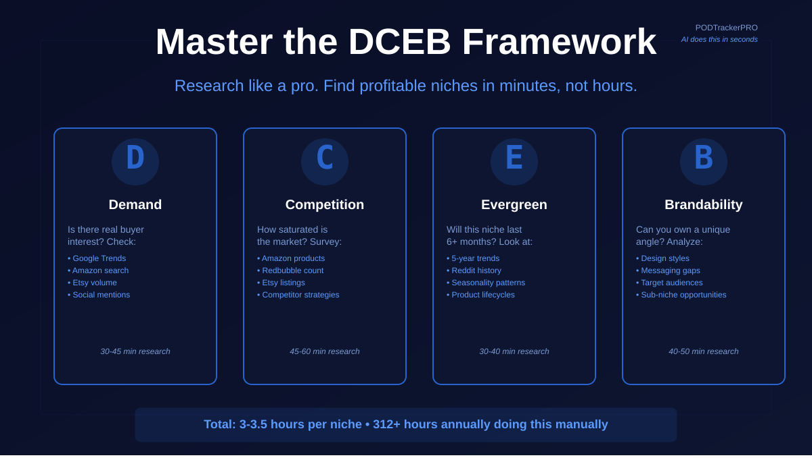

Research is the bottleneck in print-on-demand. Get it right, and everything becomes easier. Get it wrong, and you're designing for a market that doesn't exist.
The DCEB framework gives you a structured way to evaluate whether a niche is worth pursuing. Here's how to research each dimension manually and why most creators eventually automate it.
What is DCEB?
DCEB is an acronym for four dimensions that determine niche viability:
- Demand - Is there real buyer interest?
- Competition - How saturated is the market?
- Evergreen - Will this niche stay relevant long-term?
- Brandability - Can you own a unique angle?
Each dimension gets scored on a scale. The composite score gives you a verdict: YES (worth pursuing), MAYBE (promising but risky), or NO (pass on this one).
D - Demand: Is There Real Interest?
Demand measures whether people are actually searching for products in this niche. Without demand, there's no market.
How to Research Demand Manually
1. Google Trends
Start here to gauge broad interest level.
- Go to Google Trends
- Type your niche, for example "yoga enthusiasts," "coffee lovers," or "indie developers"
- Look at the interest over time graph. Is the line going up, flat, or down?
- Check related queries. What variations are people actually searching for?
- Note the search volume scale, typically 0-100 where 100 is peak popularity
What you're looking for: Consistent or growing interest, ideally 40+ on the 0-100 scale. If the line is flat or declining, demand is weak.
2. Amazon Search Volume
Amazon is the largest POD marketplace. If people are searching for it on Amazon, there's demand.
- Go to Amazon.com
- Start typing your niche keyword in the search bar
- Look at the autocomplete suggestions. These are real searches people are doing
- Count how many relevant suggestions appear
- Click on a top result and scroll down to see "Customers Also Searched For"
What you're looking for: Multiple autocomplete suggestions and a healthy results page with 1,000+ products. If autocomplete is sparse, demand is low.
3. Etsy Search Volume
Etsy is another major marketplace with explicit search data.
- Go to Etsy.com
- Search your niche keyword
- Look at how many listings exist
- Use the filters to see if results break into subcategories
- Check if there are "trending now" sections that mention your niche
What you're looking for: 5,000+ listings for your niche. If there are fewer than 1,000, demand may be too low.
4. YouTube and Social Media
Search volume on YouTube and TikTok tells you what content creators are making, which hints at audience size.
- Search your niche on YouTube
- Count how many videos exist
- Check view counts on top videos. Are they hitting 100k+ views?
- Repeat on TikTok and Instagram. Look for hashtag volume and view counts
What you're looking for: At least 50+ videos with decent views, or thousands of TikTok posts. Creators make content where there's an audience.
5. Reddit and Niche Communities
Go where your audience actually hangs out.
- Search your niche on Reddit, for example
r/yoga,r/coffee, orr/webdev - Look at subreddit size and post frequency
- Check if discussions are active with recent posts and lots of comments
- Note pain points mentioned repeatedly. These are design angles
What you're looking for: Active communities with 10k+ members and regular discussion. Inactive subreddits usually mean low engagement.
Scoring Demand
- 8-10: Strong, consistent, growing interest across multiple sources
- 6-7: Solid interest, but not explosive. Viable niche.
- 4-5: Moderate interest. Requires validation before committing.
- 1-3: Weak or declining interest. Usually a pass.
Time investment: 30-45 minutes for thorough demand research.
C - Competition: How Saturated Is the Market?
Competition measures how many similar products already exist and how difficult it would be to stand out. High competition doesn't mean NO. It means you need a stronger angle.
How to Research Competition Manually
1. Amazon Merch Search
This is where most POD volume lives. Search your niche and assess the battlefield.
- Go to Amazon and filter to merchandise if possible
- Search your niche keyword
- Count the first 50 results and see how many are directly relevant
- Look at Best Sellers Rank on product pages
- Check review counts to find established, proven products
What you're looking for:
- 100-500 relevant products = moderate competition
- 500-2,000 = high competition
- 2,000+ = very high competition and requires a very strong angle
2. Redbubble
Redbubble is designed for POD creators and shows all products openly.
- Go to Redbubble.com
- Search your niche
- Scroll through the first 100 products
- Note how many have similar designs
- Check sales badges to see who's winning
What you're looking for:
- Fewer than 500 products = low competition
- 500-2,000 = moderate
- 2,000+ = high saturation
3. Etsy Search
Etsy shows exact listing counts, which is valuable intel.
- Search your niche on Etsy
- The results page shows listing count at the top
- If Etsy shows 10,000+ listings in your category, competition is extremely high
- Click into top sellers and note their strategies
What you're looking for:
- Under 5,000 listings = low to moderate
- 5,000-20,000 = high
- 20,000+ = extremely saturated
4. Google Search for Your Angle
Search how existing creators market your niche.
- Google: "[your niche] t-shirt," "[your niche] design," or "[your niche] merchandise"
- Scan the first 2-3 pages
- Note which creators or brands appear
- Check their social media follower counts and engagement
What you're looking for: Few established players means opportunity. Many established brands means harder entry.
5. Design Inspiration Sites
See what design styles already dominate the niche.
- Check Pinterest, Dribbble, or Behance for your niche
- Search design trends related to your topic
- Note which styles get the most saves or likes
- Look for design gaps. What styles are missing?
What you're looking for: Repetitive design styles usually means a saturated aesthetic. Diverse design styles means more room for differentiation.
Scoring Competition
Score out of 10, inverted so lower competition scores better.
- 8-10: Very low competition. Early-stage niche.
- 6-7: Low to moderate competition. Doable with a unique angle.
- 4-5: Moderate to high competition. Requires differentiation.
- 1-3: Extremely saturated. Possible only with a very strong unique angle.
Time investment: 45-60 minutes for thorough competition research.
E - Evergreen: Will This Niche Last?
Evergreen measures whether the niche will stay relevant 6+ months from now. Trends die. Evergreen niches last.
How to Research Evergreen Value Manually
1. Google Trends Over Time
- Set the time range to Last 5 years
- Plot the graph and look for consistent year-round interest or spikes
- Check for seasonality and repeated yearly peaks
What you're looking for: Flat line = evergreen. Predictable peaks = semi-evergreen. Spike then crash = trend.
2. Reddit and Community History
- Search your niche subreddit
- Look for top posts of all time
- Check if people are still discussing the same topics years later
- See whether new members are still joining
What you're looking for: Active communities with multi-year presence are usually evergreen.
3. Search Volume Seasonality
- Look at the yearly pattern in Google Trends
- Map recurring peaks to seasonal design opportunities
What you're looking for: Year-round interest is ideal. Predictable seasonal spikes are workable. A single spike is risky.
4. News and Cultural Relevance
- Search Google News for your niche
- Check if coverage stretches across years or clusters in one period
- Ask yourself: "Will people care about this in 2 years?"
What you're looking for: Consistent news coverage over years usually signals evergreen relevance.
5. Product Lifecycle
- Find best-sellers on Amazon or Redbubble
- Check review dates to see if old products still get fresh reviews
- Compare older best-sellers to newer ones
What you're looking for: Old products still getting reviews usually means the niche is evergreen.
Scoring Evergreen
- 8-10: Timeless, year-round interest
- 6-7: Mostly evergreen with predictable seasonal peaks
- 4-5: Semi-trendy. Interest fluctuates
- 1-3: Clearly trendy. Short shelf life
Time investment: 30-40 minutes for evergreen research.
B - Brandability: Can You Own a Unique Angle?
Brandability measures whether you can create a unique perspective in this niche. Even in crowded markets, differentiation is possible if there's room for your angle.
How to Research Brandability Manually
1. Design Style Analysis
- Search your niche on Etsy, Amazon, and Redbubble
- Categorize the top 30 products by design style
- Count which styles appear most often
What you're looking for: Design diversity means room for your style. Repetition means a clear gap may exist.
2. Messaging and Tone Audit
- Read descriptions and marketing copy for top products
- Note recurring phrases and emotional tone
- Ask: "What messaging angle is missing?"
What you're looking for: Repetitive tone usually means you can differentiate with a different angle.
3. Target Audience Identification
- Look at reviews on top products
- What do buyers say they like?
- Are there sub-audiences being ignored?
Example: a yoga niche may be dominated by peaceful zen messaging, but there may be underserved audiences like yoga teachers, older adults, or competitive athletes.
4. Niche Depth Research
Test sub-niches and angles you might own exclusively.
- Main niche: Outdoor enthusiasts
- Possible angles: rock climbers, women climbers, indoor climbers, climbers 40+, climbers with anxiety
What you're looking for: Multiple viable sub-niches usually means strong brandability.
5. Competitive Differentiation
- List the top 10 sellers in your niche
- Note their design approach, messaging, and product types
- Ask: "What are they NOT doing?"
What you're looking for: Clear gaps in style, audience, or messaging that you can own.
Scoring Brandability
- 8-10: Strong sub-niches and multiple angles
- 6-7: Some room for differentiation
- 4-5: Crowded, but possible with strategy
- 1-3: Very hard to stand out
Time investment: 40-50 minutes for brandability research.
Putting It Together: Your DCEB Score
Once you've scored all four dimensions, here's how to calculate your composite verdict.
Weighted Composite Score
DCEB uses weighted scoring to balance the dimensions:
- Demand: 30%
- Competition: 25%
- Evergreen: 25%
- Brandability: 20%
Formula:
DCEB Score = (D x 0.30) + (C x 0.25) + (E x 0.25) + (B x 0.20)
Example:
- Demand: 7/10
- Competition: 6/10
- Evergreen: 8/10
- Brandability: 7/10
Score = (7 x 0.30) + (6 x 0.25) + (8 x 0.25) + (7 x 0.20) Score = 2.1 + 1.5 + 2.0 + 1.4 = 7.0
Verdict
- 7.0-10: YES - Strong opportunity. Pursue this niche.
- 5.0-6.9: MAYBE - Viable, but risky. Validate further.
- 1.0-4.9: NO - Pass on this one.
Real Example: Sustainable Fashion Designers
Demand (7/10): Growing Google Trends interest, 3,000+ Amazon products, 15,000+ Etsy listings, 200+ YouTube videos with solid views, and a 40k-member subreddit.
Competition (5/10): Crowded on Amazon, Redbubble, and Etsy, with established eco-brands already present.
Evergreen (8/10): Multi-year interest, long-running news coverage, and products still selling after years.
Brandability (6/10): The niche is crowded, but angles like "sustainable fashion for men" or funny eco-designs are underserved.
(7 x 0.30) + (5 x 0.25) + (8 x 0.25) + (6 x 0.20) = 2.1 + 1.25 + 2.0 + 1.2 = 6.55
Verdict: MAYBE - Viable, but you need a strong differentiation angle.
Total Time Investment for Manual DCEB Research
- Demand: 30-45 minutes
- Competition: 45-60 minutes
- Evergreen: 30-40 minutes
- Brandability: 40-50 minutes
- Score and Analysis: 15-20 minutes
Total: 3-3.5 hours per niche
If you research 2 niches per week, that's 6-7 hours of research time before you even sketch a single design. Over a year, that's 312+ hours of research, or more than 7 full work weeks.
The Problem with Manual Research
Manual DCEB research is thorough, but it's also:
- Time-consuming - 3+ hours per niche adds up fast
- Inconsistent - your scoring changes with fatigue and perspective
- Biased - you unconsciously favor niches you like
- Incomplete - you may miss data sources or make assumptions
- Hard to compare - comparing 10 niches manually is cognitive overload
Most creators research 1-2 niches, then stop, because it's exhausting.
The creators who research 5-10 niches and find the real winners usually have a lot more time, a team, or a tool.
There's a Better Way: PODTrackerPRO's AI DCEB Checker
Instead of spending 3 hours researching one niche manually, PODTrackerPRO's AI DCEB Auto-Score does it in seconds.
How It Works
- Type your niche
- Click DCEB Auto-Score
- Get your verdict in seconds
The AI analyzes Google Trends, Amazon, Etsy, Redbubble, and Pinterest signals automatically. It scores Demand, Competition, Evergreen, and Brandability, generates a composite DCEB score, gives you a clear verdict, and explains the reasoning behind each score.
What This Means for You
Manual research: 3 hours to find 1 viable niche.
PODTrackerPRO: 3 minutes to find 5-10 viable niches, then dive deep on the winners.
You go from researching like you're stuck in mud to researching like you have actual tools.
Bonus: Explore Sub-Niches
PODTrackerPRO can also break your niche into 5-6 specific sub-niches, each with their own DCEB score.
Example: Search "yoga"
- Yoga teachers
- Competitive yoga athletes
- Yoga and mental health
- Yoga for men
- Hot yoga enthusiasts
- Yoga for older adults
You see all of them in 1 minute, then dive deep on the ones with the highest scores.
When to Use Manual Research vs. AI
Use manual research when:
- You're on the Free plan
- You want to validate or double-check an AI recommendation
- You have niche insider knowledge the AI might miss
- You genuinely enjoy the research process
Use PODTrackerPRO's AI when:
- You want to test 5-10 niches in the time it used to take 1
- You want consistent, unbiased scoring
- You want to discover sub-niches you would not think of manually
- You want to spend less time researching and more time designing
Your Next Step
If you're currently researching niches manually, you already know: it's slow, it's hard, and you're probably not researching enough.
PODTrackerPRO removes the bottleneck. Research faster. Test more. Find winners.
Start with a free account - no credit card required. You can manually research one niche, or test the AI on 5. Either way, you'll see the difference.
The research that used to take 3 hours? You can do it in 3 minutes.
Then the real work begins: creating designs that only you can create.
Research is the bottleneck. PODTrackerPRO removes it.